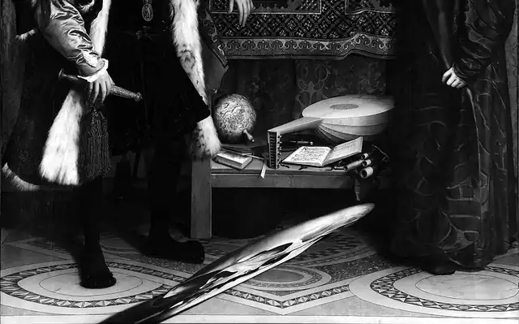

Hans Holbein, o Jovem, Os Embaixadores, 1533. National Gallery, Londres. Wikimedia Commons, domínio público.

No chão, a forma alongada representa um crânio em anamorfose: no quadro, reconhece-se melhor de uma posição oblíqua. Um quadro pode dizer duas coisas ao mesmo tempo, uma de frente e outra de lado.
Módulo 1: Modos de ver →Há uma forma estranha no chão do quadro. Muda o lugar de onde olhas.
Quem fala, de quem se fala, quem nunca fala?